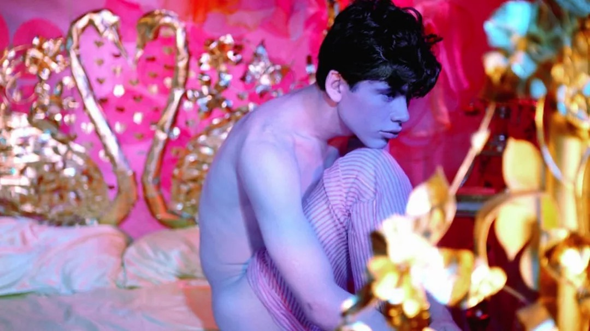
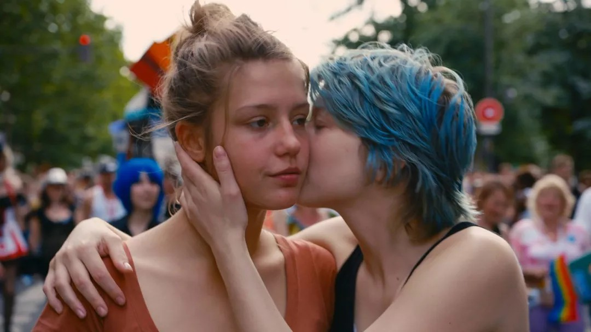
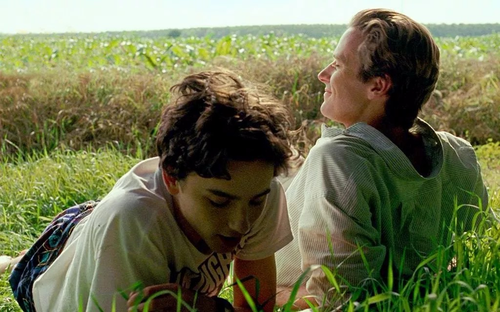

当前位置：home > stories > Art stories

《粉红水仙》（1971）詹姆斯•毕固得
1971年的一部美国文艺片。尽管年代久远，但是这却被称为永恒的经典，整部电影从头到尾没有一个写实的镜头，虽然电影中有大量的 体镜头，但全是在虚幻的梦境之中，大片的红色或蓝，没有故事情节，像一部音乐录影带，电影截图仿佛是象征主义的绘画作品。

《阿黛尔的生活》（2013）阿布戴•柯西胥
斯皮尔伯格评论道：「这部电影讲了一个伟大的爱情故事，让我们感觉自己就像是一只墙上的苍蝇，在看深刻的爱情故事，而从一开始，这份爱情就慢慢变为了心痛。导演没有在叙事上作出任何限制，我们完全因两位演员精彩的演出而着迷，特别是导演观察期角色的方式，他完全让他们自由地呼吸。」
《卡罗尔》（2015）托德•海因斯
这部电影改编自派翠西亚•海史密斯1952年的爱情小说《盐的代价》，海史密斯在二十世纪四十年代与比她稍微大一些的费城名流弗吉尼亚•肯特•凯瑟伍德有过一段恋情，这真实的经历一定程度上启发了她的创作。

《请以你的名字呼唤我》（2017）卢卡•瓜达尼诺
这部LGBTQ+电影不留余力地描绘了在性吸引中注定因既定的社会标准而湮灭的纯洁和美好，特别是在还并不久远的那个年代，当时同性恋是违法的。因为这样的环境，电影用希腊象征性的男性视觉以及古希腊雕塑来呈现不可言说的欲望，非常出色地运用了古典的意识形态来寻找人身上独特的魅力。
《上帝之国》（2017）弗朗西斯•李
两位主人公之间唯一的电流就是他们的脉搏。他们两人很少说话或是有其他真正的接触，相反，我们在意的是他们之间世俗的联系，比如淤泥、流淌的小溪、草堆的神力；这些都强调了这个国家严酷压抑的氛围，反射出两人之间坎坷的情感之路。